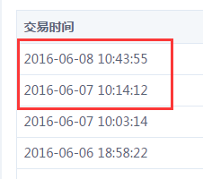

返回
效果图

代码(可以用查看源文件里找)
formatDateFn: function(t, long) { //时间格式化，long参数是判断是否显示长日期（显示时间）格式
var _this = this;
t = new Date(t);
var year = t.getFullYear();
var month = _this.formatNumFn(t.getMonth() + 1);
var date = _this.formatNumFn(t.getDate());
var hour = _this.formatNumFn(t.getHours());
var minute = _this.formatNumFn(t.getMinutes());
var second = _this.formatNumFn(t.getSeconds());
if (long == 'long') {
return year + "-" + month + "-" + date + " " + hour + ":" + minute + ":" + second;
} else {
return year + "-" + month + "-" + date;
}
}